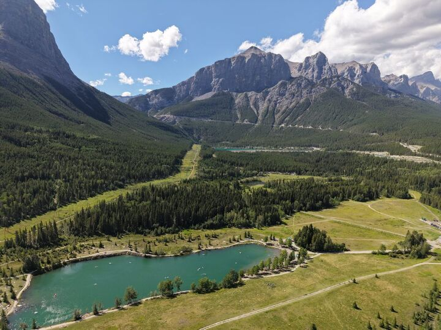
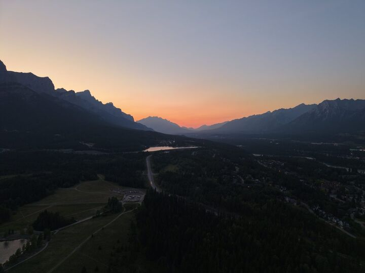
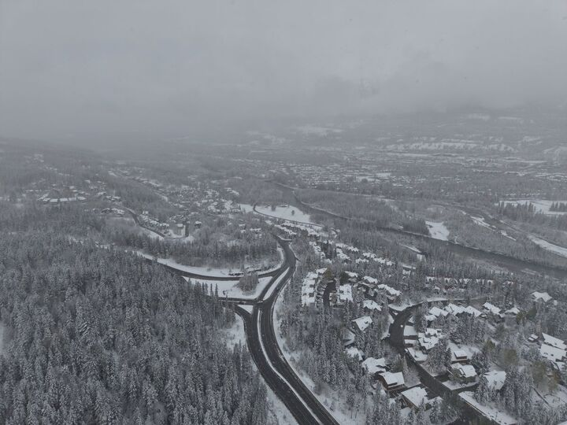
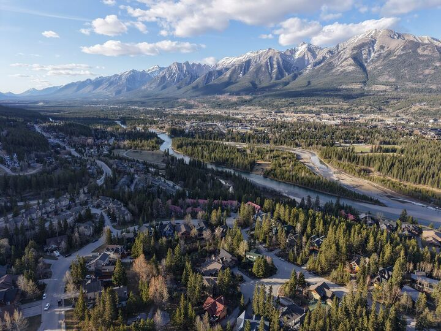
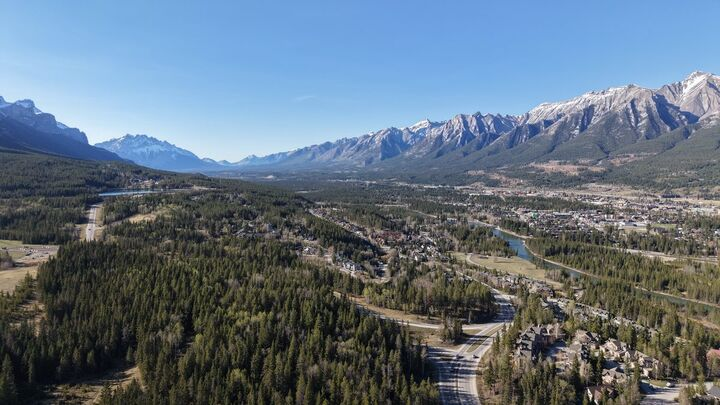
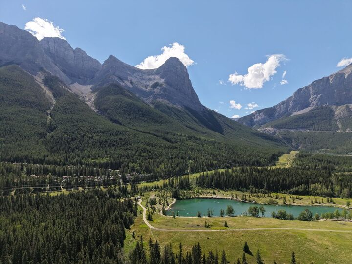
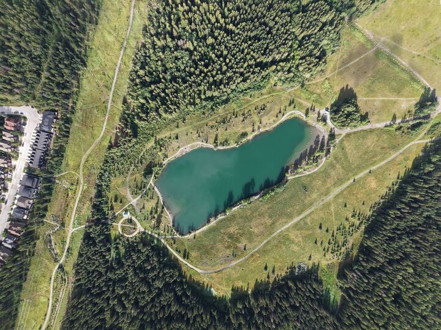
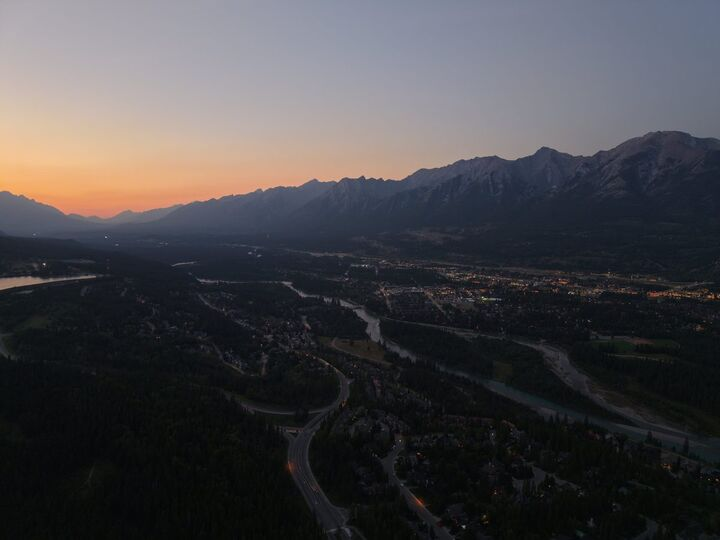
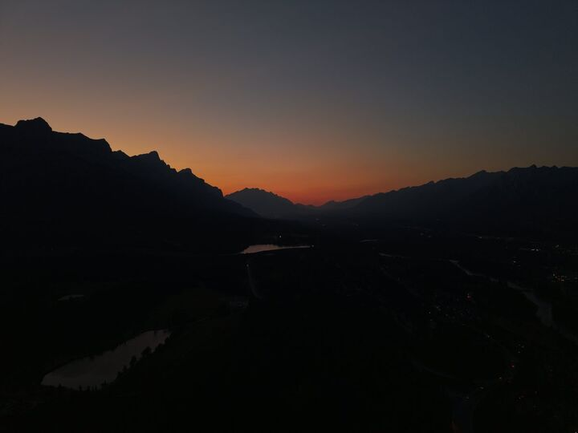

IT Support
Our specialty: computers, Wi-Fi, printers, phones, security and backups for homes and small businesses. Get IT help
Canmore, Alberta · Est. 2023
IT Support · Snow Shoveling · Drone & Construction Services
“Where the site meets the sky.”
What we do best
Our two main services. Fast, friendly IT help for homes and small businesses across Canmore and Banff, and dependable snow shoveling on Charles Carey all winter.
Our specialty
Tech help that actually fixes the problem. Syme Skyworks sets up, repairs and secures computers, networks and devices for homes and small businesses across Canmore and Banff, and explains everything in plain language.
Free quotes
Tell us what is going wrong or what you need set up, and you will get a reply with a quote and a time.
Get IT HelpNew computers set up, accounts, settings and everything moved over from the old one.
Slow computers, error messages, crashes and things that just stopped working.
Routers, weak Wi-Fi, connection drops and getting every device online.
Removing malware and pop-ups, and setting up protection and safer passwords.
Photos, files and documents backed up safely or moved to a new device.
Printers, smart TVs, speakers and other home tech connected and working.
Installing programs and updates, and setting up email on every device.
Setup, syncing and help with iPhones, Android phones and tablets.
What we do
IT support and snow shoveling lead the way, backed by skilled work on the ground and in the air for homeowners, job sites and businesses across Canmore and the Bow Valley.
Our specialty: computers, Wi-Fi, printers, phones, security and backups for homes and small businesses. Get IT help
General construction help, log stripping, yurt builds, foundation work and hands-on site labour, for small projects or as extra hands on larger sites.
Safe, efficient aerial inspections of structures, rooftops and hard-to-reach areas, flown with the DJI Air 3S.
High-resolution photos and 4K video for real estate, marketing, events and site documentation.
Regular aerial records of construction progress, so stakeholders stay informed and issues are spotted early.
An extra set of hands or a store run to keep the job moving, available on call.
Locally based, with project experience in the 3 Sisters development area, including yurt construction and log stripping.
Driveways, walkways and steps cleared after snowfalls of 2 cm or more, from $16 per visit. Serving Charles Carey all winter. Sign up
Lawn mowing, weeding and yard cleanup from spring to fall, with free quotes. Pre-register now for next season. Pre-register
On Charles Carey
Seasonal help for homes on Charles Carey in Canmore: shoveling in the winter, yard work in the summer. Sign up for this season or pre-register for the next one.
From $16 / visit
Driveways, walkways and steps cleared after every snowfall of 2 cm or more. Timing and price depend on the driveway, the client and the location, and quotes are always free.
Free quotes
Lawn mowing, weeding and yard cleanup for homes on Charles Carey, from spring to fall. Every yard is different, so pricing is quoted per property.
Aerial services
Syme Skyworks flies the DJI Air 3S, backed by more than two years of hands-on flight experience. Every job is planned around safety and a clear deliverable.
From a quick roof inspection to ongoing site documentation or aerial footage for marketing, flights follow Transport Canada rules, and any special authorization is arranged before the flight.
Book a Drone Service

Ground services
Based in Canmore and active in the 3 Sisters area, Syme Skyworks provides motivated, hands-on construction support, from log stripping and yurt builds to foundation work and material runs.
Newer to the construction trade, with real on-site experience and a willingness to learn from experienced tradespeople. Show us what needs doing and it will be done right.
Get in Touch
Show up. Work hard. Deliver.
No job too small. No challenge too new.
Our work
Aerial work and the landscapes we fly in, around Canmore and the Bow Valley. Select a photo to enlarge it.









Rates
Clear starting rates. Final pricing depends on scope, location and complexity.
From $150 / session
Short aerial shoots, quick inspections or single-location photography.
From $400 / day
Full aerial coverage for real estate, events or construction documentation.
From $25 / hour
Motivated, hands-on construction support for projects of any size.
Free quote
Setup, repairs, Wi-Fi, security and backups, quoted per job.
Get IT HelpFrom $16 / visit
Driveways after 2 cm+ snowfalls. Price depends on the driveway and client.
Sign UpFree quote
Mowing, weeding and yard cleanup, priced per property. Pre-register for next season.
Pre-registerAll prices are starting rates in Canadian dollars. Final quotes depend on project scope, travel and specific requirements. Estimates are free.
Who we are
Syme Skyworks is a locally owned contracting and drone services company in Canmore, Alberta, founded in 2023 and operated by Malcolm Syme.
We work on a flexible, on-call basis: assisting on a large job site, running for materials, or handling the smaller tasks that keep a project moving.
Newer to the construction market, we bring hands-on experience and a strong drive to grow alongside the experienced tradespeople and contractors we work with.
Equipment
Experience
Common questions
Most drone flights in Canada must follow Transport Canada regulations. All flights are conducted in line with the applicable rules. Some areas near Canmore require special authorization, which is arranged before any flight.
Computer setup, troubleshooting and repairs, Wi-Fi and home networks, virus and security cleanup, data backup and transfer, printers and smart devices, software and email, and phones and tablets, for homes and small businesses in Canmore and Banff. Quotes are free: tell us what you need.
On Charles Carey in Canmore. IT support, drone services and construction support cover the rest of Canmore, and IT support also covers Banff.
After snowfalls of about 2 cm or more. Exact timing depends on the client and the location, and is confirmed when you sign up. Driveways start at $16 per visit, and quotes are free.
IT support: Canmore and Banff. Drone services and construction support: all of Canmore, including the 3 Sisters area, and the Bow Valley on request. Snow shoveling and landscaping: Charles Carey.
Use the contact form below or email mcsyme11@gmail.com with what you need. You will receive a reply to confirm details and availability.
No flights take place in high winds, rain or any conditions that could compromise safety. If weather forces a cancellation, the job is rescheduled at no extra charge.
Hands-on experience from active projects in the 3 Sisters area, including yurt construction, log stripping and foundation work, with a continued focus on learning from experienced tradespeople on site.
High-resolution JPEG photos and MP4 video. Other formats are available on request.
Yes. Recurring arrangements are available for regular aerial documentation, site monitoring or ongoing construction support.
Get in touch
Tell us about your project and you will receive a reply as soon as possible.